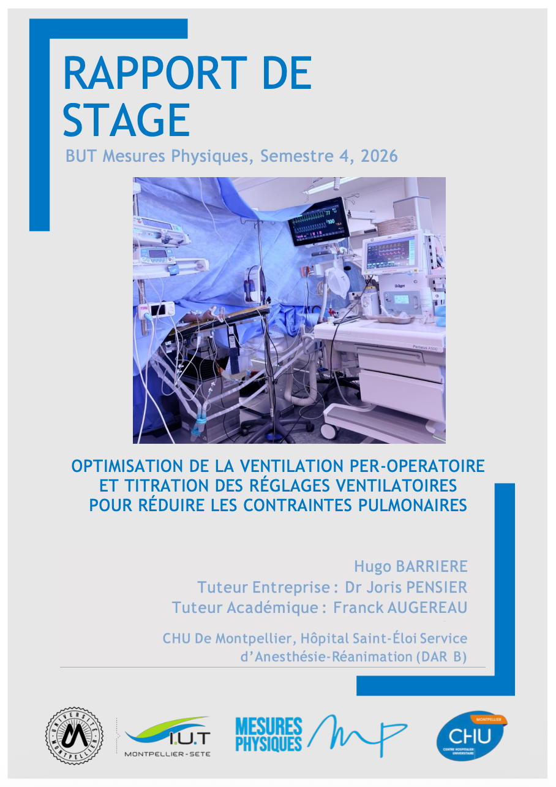
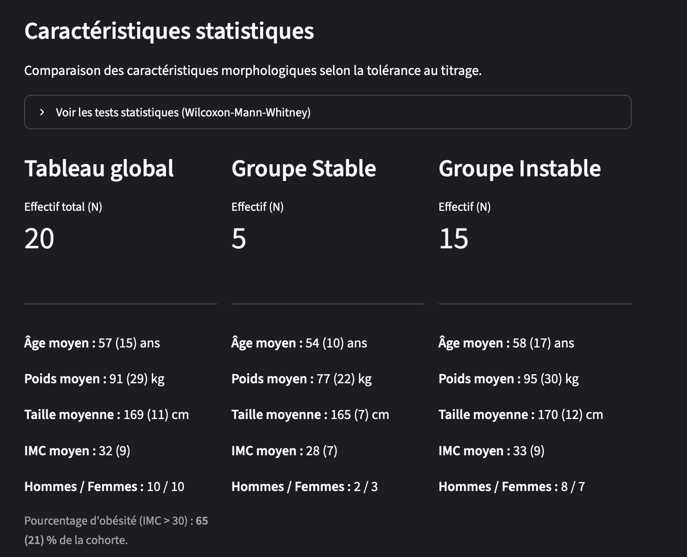

The first part of my internship involved conducting a literature review to understand the physical principles of mechanical ventilation and observing operating room activities to define a problem-solving approach. I attended surgeries, including gallbladder removals, abdomino-thoracic esophagectomies, and liver transplants. I also observed technical procedures, such as placing patients with acute respiratory distress on mechanical ventilators and preparing patients for surgery.
Subsequently, I had the opportunity to apply the initial protocol of the IMPROVE III study by setting up a measurement campaign, conducted by the anesthesia platform on 20 sedated patients. To process this data flow, I developed an automated analysis tool using Excel and Python to accurately calculate the mechanical power applied to lung tissues. This campaign yielded crucial results for the deployment of the study.
Indeed, biostatistical analysis revealed that certain biases were concerning regarding "protective" ventilation. Through my work, I demonstrated that the initial IMPROVE III protocol was inadequate and potentially harmful at high volumes. Together with Professor DE JONG (lead coordinator of the study), we revised the protocol to make it as protective as possible.


